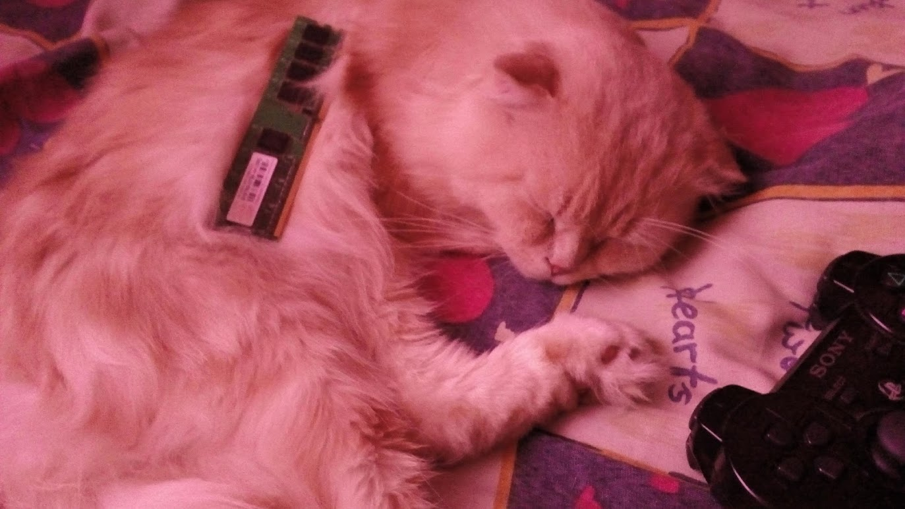
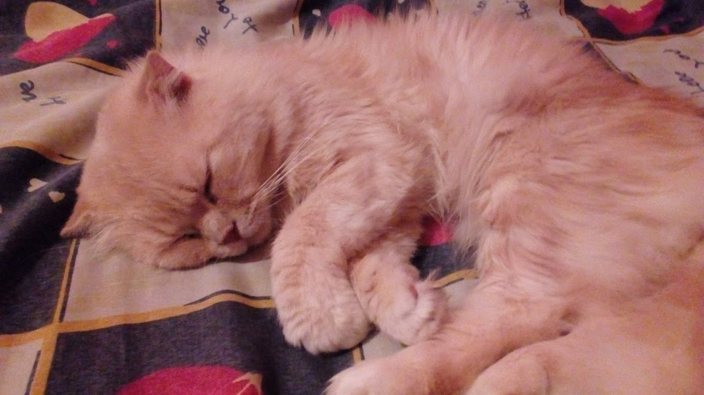
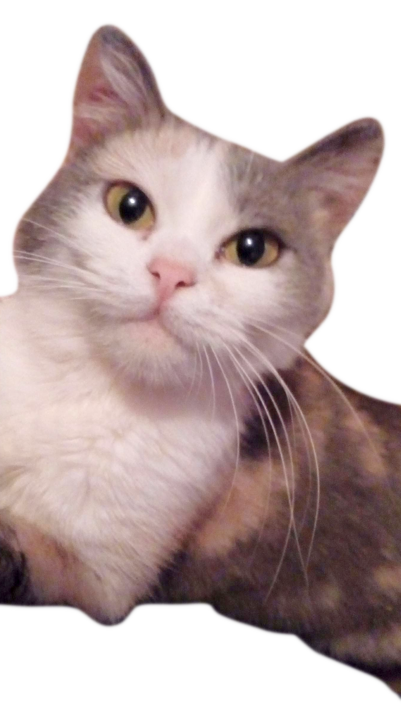

Поздравляю вас дорогой друг, возможно второй раз уже. Подарок наверное не очень то и хороший, но это всё что я придумал. Как я уже говорил, я не умею придумывать подарки, так что как-то так. Кстати поэтому ещё на ваш день рождения тоже был обычный такой подарок.
Так как я не знаю чем ещё заполнить эту страницу, я просто оставлю несколько картиночек.
Это возможно я, недовольный после стрижки (ярко-красным цветом выделена часть, которая была) [07.03.19 23:57]
Полный размерМамин кот и Рам
 Полный размерМамин кот, но без Рам
 Полный размерКошка (А дзе усы? А я не знаю)
 Полный размерНемного о моде...
Я всегда хочу его продолжить, но так как я вечно хочу спать или приходит брат и сидит у меня почти до ночи. (да, я знаю, то что я сказал может показаться отговоркой, но всё же) И всё-таки когда у меня есть время и желание, я сижу и думаю как мне сделать или скомилировать свою прогу DDLC Character Poser, чтобы постоянно не заходить в эту прогу и не запускать прогу оттуда (что очень муторно, да и я хочу выпустить эту программу в свет). Я уже знаю что и как делать, но по какой-то непонятной причине один долбанный файл не хочет качаться и из-за всего это накрывается всё и в итоге ничего не выходит из этого.
UPDATE: Я всё-таки смог прогу собрать в один файл и я буду продолжать делать мод как только мне будет не лень.
Немного о самой проге.. (если это вам интересно конечно)
Скрин проги с выбранной позой 3bc для Юри (можно сказать, моя любимая поза Юри). Тут испорчен шрифт, поскольку он должен быть Calibri, а на операционке на которой я сижу он выглядит погано. (это исправится)
DDLC Character Poser (или как я его просто называю ddlc-cp) очень легко использовать. Выбрать персонажа из списка возможных, выбрать позу тела и головы, опциально выбрать можно одежду через кнопку Open Outfit Select (типо никто не догадался). Также можно выбрать позицию персонажа на сцене в игре через кнопку Open Position Select, в появившимся меню выбрать нужную позицию и эффект появления. И теперь можно скопировать получившуюся строчку кода для игры в нижней строке.
Меню позиций в ddlc-cp.
Можно вписать свои позы для своего нового персонажа (что было бы полезным для мода если бы кто-нибудь помог нарисовать спрайты для персов), но тут я про это говорить не буду, поскольку это трудновато и долго объяснять, да и вам думаю это ненужно. Ну а сам код программы настолько заморочен, только чтобы пользователю проги было как можно легко контактировать с ней и не ливнуть из неё как только что-то не получилось, как я это сделал с MMD когда только зашёл и увидел странный интерфейс.
Небольшой вид на весь код в ddlc-cp, 238 строчек. (и это конечно же с одной очень облегчающей штукой, которая сама ещё очень большая и сжатая в размере)
Если вы это читаете, значит вы выдержали немного бреда (если вы конечно не пролистали в конец страницы просто так от скукоты или ещё чего-нибудь) и я вас поздравляю с этим. А теперь совсем небольшая история про две шоколадки.
Я сначала купил большую молочную шоколадку за 4 рубля, но брат решил влезть в неё без разрешения. Я на него немного покричал и он отдал 5 рублей за неё. Я купил на них две обычные молочные шоколадки с орешками. Поэтому в пакете содержится две шоколадки, надеюсь вы понимаете меня. Приятного аппетита вам если вы будете их кушать.
Вы изменились, причём резко и сильно. Я не знаю почему, но думаю потому что абсолютно все меняются в этом возрасте, но я не видел что бы очень резко менялись люди. Вы чтали холодно ко мне относиться, возможно вы что-то выявили для себя, возможно из-за пересадки во второй четверти, возможно вы нашли для себя лучше друга чем я. Этого я не знаю.
Конец тут.
{kind=link}
{kind=link}
{kind=link}
{kind=link}